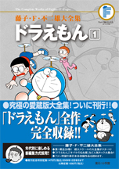

| |

＜1959年度〜1961年度
生まれの学年誌掲載集＞
定価：本体1,800円＋税
A5判／782ページ
好評発売中！
★は初めて単行本に収録される
作品です。
※収録内容は変更になる
場合があります。

|
★新連載の予告（小四69年12月号）
未来の国からはるばると（小四70年01月号）
ドラえもんの大予言（小四70年02月号）
けんかマシン（小四70年03月号）
机からとび出したドラえもん（小三70年01月号）
愛妻ジャイ子!?（小三70年02月号）
のび太が強くなる（小三70年03月号）
おいかけテレビ（小四70年04月号）
白ゆりのような女の子（小四70年06月号）
ロボット福の神（小四70年07月号）
のぞきお化け（小四70年08月号）
ああ、好き、好き、好き！（小四70年09月号）
ペコペコバッタ（小四70年10月号）
わすれとんかち（小四70年11月号）
タイムふろしき（小四70年12月号）
のび左エ門の秘宝（小四71年01月号）
好きでたまらニャい（小四71年02月号）
★ドラえもん未来へ帰る（小四71年03月号）
未来から来たドラえもん（小二70年01月号）
★やきゅうそうどう（小二70年02月号）
★オーケーマイク（小二70年03月号）
★まんが家（小三70年04月号）
恐竜ハンター（小三70年05月号）
ご先祖さまがんばれ（小三70年06月号）
古道具競争（小三70年07月号）
ソーナルじょう（小三70年08月号）
うつつまくら（小三70年09月号）
のろいのカメラ（小三70年10月号）
おばあちゃんのおもいで（小三70年11月号）
エスパーぼうし（小三70年12月号） |
手足七本目が三つ（ねこの手もかりたい）
（小三71年01月号）
ドラえもんだらけ（小三71年02月号）
のろのろ、じたばた（小三71年03月号）
タイムマシンで犯人を（小四71年04月号）
うそつきかがみ（小四71年05月号）
あやうし！ ライオン仮面（小四71年06月号）
かげがり（小四71年07月号）
アリガターヤ（小四71年08月号）
ロボ子が愛してる（小四71年09月号）
ドラえもんの歌（小四71年10月号）
プロポーズ作戦（小四71年11月号）
夜の世界の王さまだ！（小四71年12月号）
勉強べやの大なだれ（小四72年01月号）
のび太のおよめさん（小四72年02月号）
★ドラえもんがいなくなっちゃう!?
（小四72年03月号）
★再開の予告（小五73年03月号）
石ころぼうし（小六73年04月号）
してない貯金を使う法（小六73年05月号）
N・Sワッペン（小六73年06月号）
ママのダイヤを盗み出せ（小六73年07月号）
珍加羅峠の宝物（小六73年08月号）
怪談ランプ（小六73年09月号）
月給騒動（小六73年10月号）
未来からの買いもの（小六73年11月号）
一生に一度は百点を…（小六73年12月号）
いやなお客の帰し方（小六74年01月号）
出さない手紙の返事をもらう方法（小六74年02月号）
ユメコーダー（小六74年03月号） |